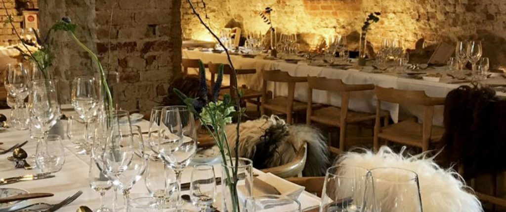
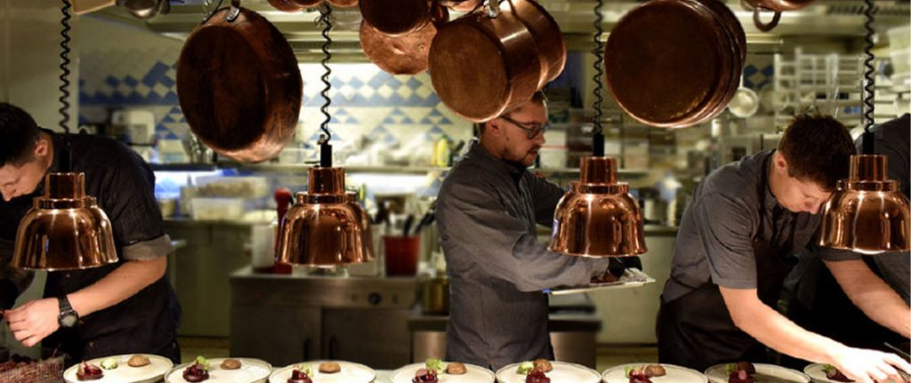

I slottes kælder finder du Madkælderen hvor der er plads til 80 siddende gæster.

Frokost
Madkælderen har åbent til frokost hver dag fra 11.30-15.00, hvor der serveres traditionelt dansk frokostmad. Det anbefales at bestille bord på forhånd.
Du kan læse mere om frokostmenuen på madkælderens hjemmeside som du finder ved at trykke her.
Aften
Torsdag, fredag og lørdag aften har du mulighed for at opleve en gourumetmiddag hos Madkælderen. Aftenen starter med en snack
som bliver efterfulgt af en 4-retters menu. Efter maden vil der blive tilbudt kaffe. Der er vin ad libitum hele aftenen.
Det hele foregår fra 18.30-22, bordreservation er nødvendig.
Du kan læse mere om deres aftenmenu på Madkælderens hjemmeside som du finder ved at trykke her.
Praktisk omkring Madkælderen
Åbningstider
Madkælderen har åbent alle åbningsdage for Koldinghus fra 11-16.00, derudover er der torsdag, fredag og lørdag mulighed for at reservere bord til aftensmad.
Det er ikke nødvendigt at købe en billet til museet for at besøge Madkælderen.

Kontakt
For at reservere bord, eller hvis man yderligere spørgsmål kan Madkælderen kontaktes på følgende:
Koldinghus 1, 6000 Kolding
Telefon: 75 50 47 98
E-mail: info@madkaelderen.dk
Web: www.madkaelderen.dk
Det er også muligt at booke bord online på følgende link